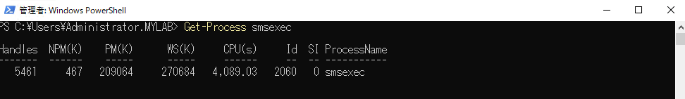
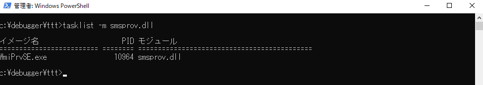
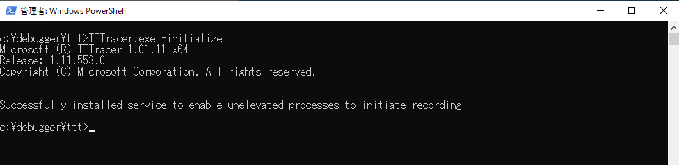
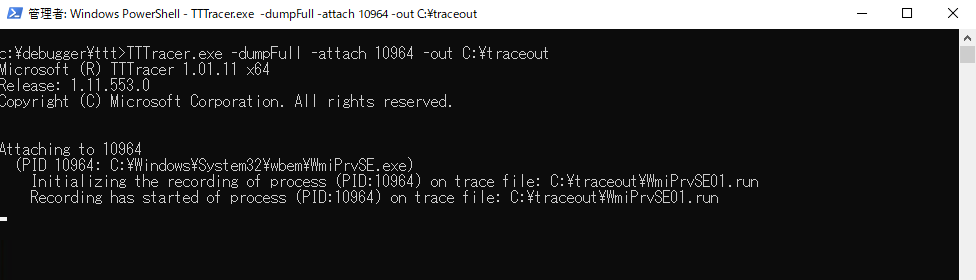
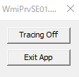
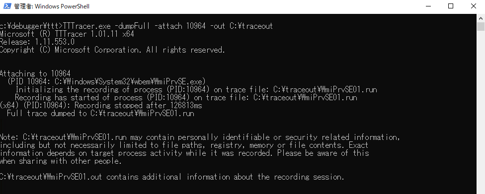
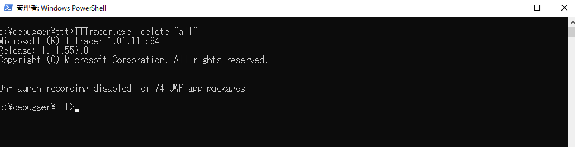

プログラムの問題を実際の実行履歴 （プログラムトレース) から解析する際に利用する IDNA トレースの採取手順です。
既に実行済みのプロセスについてのトレースを採取します。
トレース採取用ツールにつきましては、サポート ケースを介しまして担当エンジニアからご案内します。
解析対象のプロセスによって、32 bit 版のトレース プログラムを利用するか、64 bit 版のトレース プログラムを利用するかが異なります。どちらを実行すればよいかは、担当のエンジニアからご案内します。
解析対象のプロセス名については別途担当エンジニアよりご案内します。解析対象によっては、プロセス名からプロセス ID の特定が出来ないため、解析対象のモジュールを読み込んでいるプロセスからプロセス ID を特定します。
以下では 各プログラムの格納先を 便宜上 C ドライブとしておりますが、お客様の環境に応じて他のドライブに配置しても問題なく動作いたします。
1 | Get-Process [解析対象のプロセス名] |

もしくは、解析対象のモジュールを読み込んでいる プロセスを調査するため、コマンドプロンプトを開き、以下のコマンドを実行します。
1 | tasklist -m [解析対象のモジュール名] |

1 | cd C:\debuggers\ttt |

1 | TTTracer.exe -dumpFull -attach <PID> -out C:\traceout |
例) プロセスID が 10964 の場合
1 | TTTracer.exe -dumpFull -attach 10964 -out C:\traceout |

※「Have you read and do you accept the EULA? Y/N」とEULA の同意を求められる場合は、EULA.txt をご確認の上、同意いただける場合に Y を押下して下さい。
※既定では C:\Debuggers\ttt 配下にログが出力されるため、これを変更する場合には -out オプションにてトレース ファイル セットの保存先パスを指定しています。
(上記では、C:\traceout を保存先として指定した例となります。)
事象を再現させます。
事象の再現を確認した後、デスクトップ上の左上に表示された小さいウインドウで [Tracing on] のチェック ボックスを解除してトレースの取得を終了します。


1 | TTTRACER -delete "all" |
